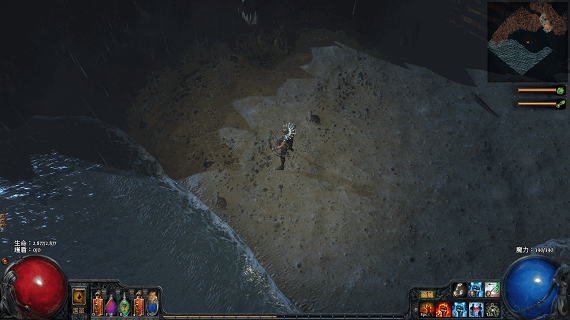
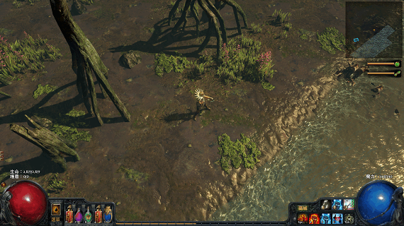
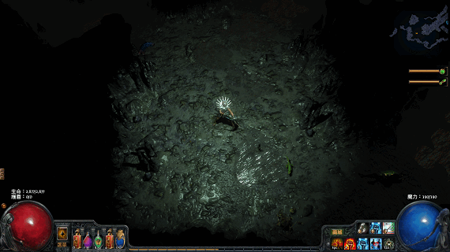
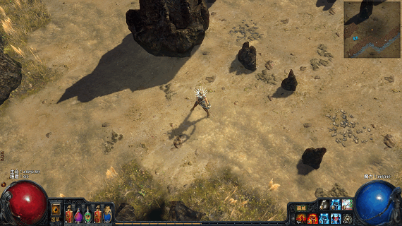
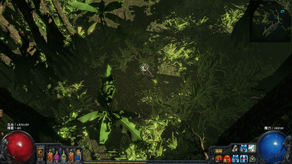
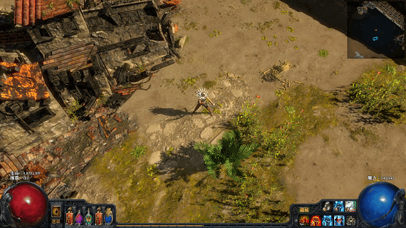

Path of Exile
比 Diablo III 更像 Diablo II 的遊戲[1]。
採免費線上遊戲方式經營，但不賣影響遊戲公平性的商城道具。
優點是練法千變萬化，可發展數十種流派。缺點是死法也千變萬化，一堆不合理的死法等著扣你 10% 經驗值。
遊戲開發團隊不覺得容易死是壞事，反而不想設計成無腦割草的遊戲，所以玩這款遊戲會有壓力，不適合下班想紓壓的人。但樂於接受挑戰性的話，這款遊戲會讓你覺得精彩萬分！
聲明
我不再玩這遊戲了！所整理資料已不合時宜且會誤導，因此請跳轉到：流亡黯道台服官網、流亡編年史、流亡黯道透視鏡，以獲得正確的玩法資訊。
本文之所以留著，只是想回顧我玩這遊戲的點點滴滴…這是重拾我想玩遊戲的熱情、第一款因為超越經典而經典的遊戲。雖然覺得這遊戲幾次改版後不再適合我，但那是我自己的問題，Path of Exile 依然是我心目中的經典遊戲、我所玩過最好玩的遊戲。
入門須知
聯盟
每次改版，官方都會建議玩家選擇新聯盟。但其實第一次接觸這款遊戲的人，個人不建議選擇新聯盟，因為裡面有故意刁難玩家的設計，等著讓你狂死。新手跑新聯盟，會狂死到把遊戲怒刪吧？
新聯盟其實像天梯，賽季結束會統計玩家戰績，給予獎勵，所以是老手玩的。新手請先玩標準聯盟，這才是正常內容的遊戲。先在標準聯盟找出自己滿意的練法，下次展開新賽季時，再挑戰新聯盟！
標準聯盟的老玩家們資產雄厚，打到傳奇裝備都用送的，對新手而言簡直是天堂。特別是新聯盟都開始了，卻還留在標準聯盟玩的老玩家，個性都很敦厚老實，很喜歡幫助菜鳥解決困處，讓每個參與這遊戲的人能享受這款遊戲，深怕你狂死練不下去跑掉不玩。
基本上願意長期玩這款難度頗高、而且有學習曲線的遊戲，就不是那種掛自動練功、買商城道具衝裝變強的屁孩。PoE 最大的資產，其實是熱心提攜後進、在遊戲共患難的老玩家們，這是其他割草遊戲找不到的。
但台灣 Garena 代理的流亡黯道，每次大改版，都會有升級獎勵：天賦重置、造型、特效、倉庫頁…樣樣來。不過必須在新聯盟玩才有，這時就建議玩新聯盟了！玩國際服的話，原廠就沒這麼慷慨了，只有競賽的前幾名才能拿到商城裡面的東西，正常人頂多領到競賽限定的傳奇裝備。但除了獎勵點數最高的前兩件外，其它都是垃圾沒兩樣，不然就不會送你了，想賺夠獎勵點數可是很難的。
國際服 v. 台灣服
台灣服與國際服的資料不相通，所以該玩哪一邊也是問題。
由於這遊戲優化很差，所以連線品質很重要。雖然國際服的連線品質也不能說很好，但台灣服連線品質卻比國際服差，加上國際服已經在日本架設伺服器，延遲時間只有新加坡的一半，品質又更上一層樓，成為真正想玩 PoE 的首選！
至於為何說台灣服連線品質差，只要兩邊玩就能感受到了。國際服玩起來很穩定，不快不慢的那種感覺，台灣服則是忽快忽慢，感覺很差。
但 Garena 是一家非常用心經營的網路遊戲公司，看他這麼用心想在台灣把這款遊戲經營好，我還是選擇台灣服。
中文問題，巴哈姆特有位雕像大大的小屋，有製作國際版中文化程式。這畢竟是一個人做的，沒辦法像中國是組團隊做漢化那樣完善，總是翻譯得不夠徹底，常常中英混雜。加上玩熟台服中文版的人，再到國際服看英文，大致猜得出什麼意思了，所以在國際服看英文玩的台灣玩家，比中文化的還多。
職業
這遊戲的人物屬性，是透過「天賦」來發展。奧妙的是，所有職業共用一張「天賦樹」圖，只是不同職業的「起點」不一樣，像是「野蠻人」在左下方，「女巫」在正上方。把野蠻人往女巫的方向發展天賦，會變成法師傾向的戰士。
技能則是靠寶石鑲嵌在裝備上來獲得，主要透過任務獎勵和向 NPC 購買技能寶石。你喜歡的話，「野蠻人」也可以放幾個「女巫」的召喚技能來用。
由於天賦和技能可以自由發揮，看似七種職業，卻有數十種練法，使得 Path of Exile 成為一款頗有深度的遊戲。
缺點是，天賦樹裡其實都是些效果不彰的項目，沒什麼點下去就會變強的天賦，所以配錯：「練出既不會打又容易趴的角色。」是家常便飯。任務會送一些天賦重置點數，可用來取消兩三條覺得不實用的天賦走向。但整盤配錯的話，與其努力打怪賺「後悔石」來獲得更多重置點數，不如砍掉重練吧！這次錯誤的嘗試，是你下次變得更強的經驗～
練法
技能與天賦
首先決定你想玩哪個技能！
接著看哪個職業的昇華最能發揮技能威力，例如火舌圖騰就選可以多放好幾根圖騰的聖堂武僧，而正火圖騰再多根傷害也不會疊加，就選免疫火傷的野蠻人。
然後根據技能的標籤走天賦，例如火舌圖騰的技能標籤有法術、投射物、火焰，那就點法術、元素、火焰、投射物等天賦增加傷害，不要點近戰物理傷害和範圍傷害。同時看怎樣走，能吃到最多增加 n% 最大生命的天賦，就基本成型了！
接下來的剩餘點數，再挑暴擊率、暈眩、流血、減少魔力保留（光環用）、增加詛咒效果、增加最大能量護盾、每秒回復生命、增加最大魔力（所受傷害由魔力扣除用）、耐力球、法術格擋…其中一個來發展，也就是基本傷害和最大生命之外，再挑一個輔助，走完就完全成型。注意！護甲和閃避對生存沒幫助，所以不要當輔助，因為撐得再高還是會被 BOSS 秒殺，靠路過的天賦能應付一下小怪就夠了～
裝備
由於官方的態度是不想玩家無腦割草，所以各種生存機制全被削弱，只剩決鬥者靠法術格擋還能橫行無阻。
至於其他職業，最簡單的生存機制，就是靠裝備撐高最大生命和三抗避免被 BOSS 秒殺、或者被小怪圍毆時瞬殺。然後靠狂喝瞬補的水，再清光小怪把水的劑量補回來，如此反覆進行來生存下去。為了避免被秒殺，裝備方面最好再搭配能量護盾，沒智慧有力量就搭配耐力球和吸血，也沒力量就只好撐高閃避值搭配迷蹤躲開怪物群。
但不用刻意走天賦去加強護甲和閃避，天賦只要把基本傷害和最大生命顧好就好，否則為了強化其他生存機制，弱化了傷害或生命其中一項，是沒辦法在通關後的輿圖生存的。
攻擊技能方面，4L 就能通關練到 Lv.70，打 Lv.80 輿圖要 5L，Lv.90 輿圖要 6L，不然天賦和生存機制做得再好也沒用。練不上去不是練法或穿法的問題，而是技能傷害輸出不夠強勢，沒資格挑戰高等地圖，打得慢就只有送死的份。
開荒
開荒的話，要多撿藍裝或金裝，用知識卷軸鑑定後賣給 NPC，獲得改造石，洗藍裝通關！
武器只要洗出高 % 數增加傷害就是好武，裝備只要洗出生命值就是好裝，護甲和閃避只是輔助，再高也無法保你一命，所以不用刻意追求，裝備本身提供的基本數值就夠用，再靠不朽怒嚎和熔岩護盾便能解決物理傷害的問題。
水也很重要，進入第二部後，就得用改造石洗出瞬補的生命藥劑，例如洗一瓶起泡的祝福生命藥劑，效果是：減少 50% 回復量、50% 回復量立即回復、增加 135% 回復速度，因為補血的速度開始大過扣血的速度，沒有瞬間補血就會開始狂死！前面說到，各種生存機制全被官方削弱，只剩撐高生命不被秒殺，然後狂喝水瞬補是最基本也最有保障的生存機制！因此不要吝於喝水，必須狂喝，馬上喝馬上清怪把水補滿，然後再喝再清怪把水補滿，官方只認同這種生存機制，所以是唯一沒削弱反而加強的只有藥劑方面～
通關後，想打地圖繼續練上去，就得開始點金裝來穿，點出有生命和元素抗性的就是好裝！先求三抗 35% 以上，避免被秒殺，再逐步往 50% 和 75% 努力，避免走位失誤致死。
更詳細平民裝與開荒練法的基本知識，請看：平民須知。
金錢
這遊戲沒有金錢，賣東西給 NPC 時獲得的是「卷軸碎片」或「改造石碎片」這類「通貨」，買東西也是用這些通貨來交換：
打算變賣的物品 可獲得的通貨
－－－－－－－－－－－－－－－ －－－－－－－－－－－－－
普通物品 卷軸碎片x1
未鑑定物品 蛻變石碎片x2
已鑑定物品 改造石碎片xN
高詞綴物品 增幅石x1
傳奇裝備 點金石碎片xN＋改造石碎片xN
低價詞綴 改造石碎片xN
高價詞綴 點金石碎片xN
六個詞綴 增幅石
三色相連 幻色石
六洞 工匠石x7
品質20普通護具（或多件合計40） 護甲片
品質20普通武器（或多件合計40） 磨刀石
品質20普通藥劑（或多件合計40） 玻璃彈珠
品質20地圖 製圖釘
品質20寶石（或多件合計40） 寶石匠的稜鏡
2 件已鑑定同名稀有裝備 機會石x1
3 件已鑑定同名稀有裝備 點金石x1
Lv.1~56 全套稀有裝備 機會石x1
Lv.60~74 全套稀有裝備 混沌石x1
Lv.75~100 全套稀有裝備 富豪石x1
六連 神聖石x1
護甲片 知識卷軸x2
磨刀石 知識卷軸x4
換得的通貨可以拿來購買其它通貨：
商品 售價 商人
－－－－ －－－－－ －－－－－－－－－－
傳送卷軸 知識卷軸x3 奈莎、伊娜、卡爾麗莎
蛻變石 傳送卷軸x7 奈莎、卡爾麗莎
增幅石 蛻變石x4 奈莎、卡爾麗莎
改造石 增幅石x4 奈莎、卡爾麗莎
工匠石 改造石x2 伊娜、卡爾麗莎
幻色石 改造石x3 伊娜、卡爾麗莎
鏈結石 工匠石x4 伊娜、卡爾麗莎
機會石 鏈結石x1 卡爾麗莎
重鑄石 機會石x4 伊娜、卡爾麗莎
後悔石 重鑄石x2 伊娜、卡爾麗莎
點金石 後悔石x1 卡爾麗莎
磨刀石 護甲片x3 古斯特
護甲片 磨刀石x1 塔格拉
玻璃彈珠 磨刀石x8 賀根
在交易頻道看玩家喊價時，常用的單位有：
EX 崇高石 (Exalted Orb)
C 混沌石 (Chaos Orb)
ALC 點金石 (Orb of Alchemy)
REGRET 後悔石 (Orb of Regret)
FUS 鏈結石 (Orb of Fusing)
其他像是：
BLESSED 祝福石 (Blessed Orb)
DIVINE 神聖石 (Divine Orb)
ET 永恆寶珠 (Eternal Orb)
REGAL 富豪石 (Regal Orb)
VAAL 瓦爾寶石 (Vaal Orb)
附帶一提，收裝備時，Q 是品質（quality），S 是洞數（socket），L 是連結數（link）
要點整理
鑑定
鑑定物品要用「知識卷軸」，需要鑑定的物品很多時，可以按「Shift + 滑鼠左鍵」依序點取物品。
沒有知識卷軸時，早期是多撿白裝來賣。中期則是多撿精良的武器賣磨刀石，再拿磨刀石賣知識卷軸。後期傳送卷軸用不完，可以賣知識卷軸。
技能寶石
技能寶石主要透過解任務取得，解完任務還可向賣雜貨的 NPC 購買，就擺在第二頁清單。
清單裡面的技能寶石，會隨著玩家解過的任務而增加，且每個角色可以購買的技能寶石清單不一樣，等級也會隨角色等級而成長。好處是你臨時購買技能寶石來用，就能發揮即戰力效果，不用擔心沒練過技能寶石的等級威力不夠。壞處是有些技能寶石等級 1 比較好用，或者有些技能寶石等級太高，不夠力量、智慧、敏捷去使用。
幸好圖書館任務 NPC「薩歐賽」也有賣技能寶石，而且是全部，等級只有 1。
鑲嵌在裝備的技能寶石，可以按滑鼠右鍵摘下來。
不夠洞練技能寶石，可以鑲嵌在第二武器。
喝水
藥水是免費補充的，所以努力喝水就是王道！
不妨設置空白鍵為主要技能，A 鍵 S 鍵次要技能，D 鍵喝紅水，F 鍵喝藍水，會順手很多，不再覺得麻煩。
藥水可用「蛻變石」變成魔法物品，用「改造石」重置魔法屬性。
地圖
離開地圖 8~15 分鐘會重置！滿地的裝備會消失，找好的傳點也可能改變。
想故意重置地圖的話，可以在傳送點按「Ctrl + 滑鼠左鍵」創造新的副本。
大師
大師系統是帳號中同聯盟裡所有角色共用的，所以不用每隻角色都練一次大師等級，也不是每隻角色都有自己的藏身處。
大師販賣的商品，在友好度升級、或者跟他接「每日任務」才會更新，否則每天都賣一樣的。
值得點金的物品
有些物品掉落時，數值會浮動，所以想用點金石轉為稀有物品時，當然挑最大值的為佳！底下整理出各物品最大值：
珊瑚護身符 4.0 每秒生命回復
海靈護身符 30% 魔力回復
琥珀護身符 30 力量
翠玉護身符 30 敏捷
海玉護身符 30 智慧
黃晶護身符 24 力量與敏捷
瑪瑙護身符 24 力量與智慧
青玉護身符 24 敏捷與智慧
黑曜護身符 16 全能力
帝金護身符 20% 物品掉落稀有度
珊瑚戒指 30 最大生命值
海靈戒指 25 最大魔力值
月光石戒指 25 最大護盾值
紅玉戒指 30% 火焰抗性
藍玉戒指 30% 冰冷抗性
黃玉戒指 30% 閃電抗性
紫晶戒指 13% 混沌抗性
三相戒指 10% 全元素抗性
雙玉戒指 16% 火焰/冰冷/閃電抗性
寶鑽戒指 30% 全域暴擊機率
金光戒指 15% 物品掉落稀有度
皮革腰帶 40 最大生命值
扣鏈腰帶 20 最大護盾值
重革腰帶 35 力量
素布腰帶 24% 物理傷害
扣釘腰帶 30% 敵人暈眩時間
飾布腰帶 25% 格檔暈眩回復
鯊齒箭袋 4 擊中生命回復
雙鋒箭袋 30% 命中值
刺鋒箭袋 30% 全域暴擊機率
鈍矢箭袋 35% 敵人暈眩時間
合成
販售東西給 NPC 時，就好比 Diablo II 的赫拉迪克方塊[2]，特定組合可以換到不一樣的東西。底下列出新手較常用到的組合…
裝備
武器＋素布腰帶＋磨刀石 ＝增加物理傷害
匕／杖＋扣鏈腰帶＋磨刀石 ＝增加法術傷害
武器＋紅玉／黃玉／藍玉藥劑＋改造石 ＝增加元素傷害
任意武器＋增幅石＋堅岩藥劑 ＝附加基本物理傷害詞綴
任意武器＋增幅石＋紅玉藥劑 ＝附加基本火焰傷害詞綴
任意武器＋增幅石＋藍玉藥劑 ＝附加基本冰冷傷害詞綴
任意武器＋增幅石＋黃玉藥劑 ＝附加基本閃電傷害詞綴
權杖（藍）＋紅玉戒指＋改造石 ＝附加 +1 火焰寶石等級
權杖（藍）＋藍玉戒指＋改造石 ＝附加 +1 冰冷寶石等級
權杖（藍）＋黃玉戒指＋改造石 ＝附加 +1 閃電寶石等級
頭盔（藍）＋召喚物生命回復的藥水＋改造石 ＝附加 +1 召喚物寶石等級
鞋子＋水銀藥劑＋增幅石 ＝增加移動速度的鞋子
已有跑速詞綴的鞋子＋水銀藥劑＋增幅石 ＝再增加移動速度 5%
鍛鐵戒指＋紅色／綠色／藍色技能寶石 ＝紅玉／黃玉／藍玉戒指
三種不同雙玉戒指 ＝三相戒指
琥珀護身符＋海玉護身符＋蛻變石 ＝瑪瑙護身符（力量、智慧）
琥珀護身符＋翠玉護身符＋蛻變石 ＝黃晶護身符（力量、敏捷）
翠玉護身符＋海玉護身符＋蛻變石 ＝青玉護身符（智慧、敏捷）
項鍊＋紅色技能寶石＋綠色技能寶石＋藍色技能寶石 ＝黑曜護身符（力量、智慧、敏捷）
藥劑
藥劑Ｘ３ ＝下一階藥劑
生命藥劑＋魔力藥劑＋鏈結石 ＝複合藥劑
寶石
技能寶石＋重鑄石 ＝降低等級
技能寶石＋後悔石 ＝等級 1
２０級技能寶石＋寶石匠的稜鏡 ＝20% 品質技能寶石
死亡懲罰
扣 5% 經驗值：6-10 章、5-6 級大師區域、殘酷和無情迷宮。
扣 10% 經驗值：異界輿圖、7-8 級大師區域、終極迷宮。
聊天欄指令
/deaths 顯示角色的死亡次數
/global 數字 切換世界頻道
/help 查詢所有指令
/itemlevel 查詢遊標所點取物品的等級
/passives 顯示角色的天賦點數
/played 顯示角色的遊戲時數
/remaining 查詢剩餘怪物數量
/trade 數字 切換交易頻道
/whois 角色名稱 查詢玩家
Ctrl+Alt 將裝備張貼上去
特殊用語
BUFF 加強角色能力。
CC Crowd Contrl，控場。能干擾怪物戰鬥的角色，像是冰凍、擊暈、混亂。
DPS Damage Per Second，每秒傷害輸出。
偶爾會與 APD (Attack Per Damage, 每次攻擊傷害) 一起討論利害得失。
FARM 農怪。撿打怪掉落的東西，動作很像農夫耕種，所以喻為打怪賺錢的意思。
在台灣又延伸出打怪練功的意思。
GG Good Game，藉由說「這是一場好遊戲」表示認輸，但台灣玩家演變成我死了。
NERF 削弱角色能力。
OP Over Power，表示角色能力太強。
雙持 例如拿兩把匕首，就叫雙持。
雙手 兩手拿一把武器，叫做雙手。
流派
底下各職業的練法，都是洗藍裝穿，靠 4L 技能，就能通關練到 Lv.70~79！（想打高等地圖練到 Lv.90 以上，就得穿對裝備，且至少要有 5L 技能，不然進去就是死亡扣 10% 經驗值，怎麼也練不上去。沒有準備好，就努力農怪賺錢，用混沌石向玩家買你想要的裝備吧！）
圖騰聖堂武僧 3.4
用丟了就跑的火舌圖騰攻擊，搭配每秒回復生命邊跑邊丟，在循環中生生不息～
技能
火舌圖騰＋元素集中＋精準破壞〔＋快速投射〕
烈焰衝刺＋快速施放＋持續時間延長＋秘能波動（依魔力門檻提升到 Lv.6 即可）
灰燼之捷、詛咒光環＋衰弱
召喚烈焰魔像＋召喚物傷害＋高階多重投射
火舌圖騰的基礎傷害很低，暴擊與點燃後的燃燒傷害有跟沒有一樣，因此串元素集中和精準破壞。聖堂武僧要到圖書館才買得到快速投射。
天賦
天賦樹
走完傷害和最大生命，再走每秒回復生命。
裝備
穿有生命和能量護盾的裝備，避免被秒殺。
陷阱暗影刺客 3.4
每丟一次陷阱就發動多道電弧，瞬間清光畫面所有小怪，更別說連續丟陷阱的速度，恐怕比正常施法還快，所以被整群小怪圍毆，也能瞬間清光，生存能力驚人。吃王改丟噴火陷阱，傷害輸出效率居然又比其他流派出色，成為 3.3 版最強勢的練法。
技能
電弧＋陷阱＋陷阱及地雷傷害＋多重陷阱
噴火陷阱＋陷阱及地雷傷害＋燃燒＋集中效應
烈焰衝刺
閃電之捷、冰霜之捷
受傷時施放 Lv.1＋不朽怒嚎 Lv.3＋衰弱 Lv.5＋召喚烈焰魔像 Lv.3
過渡期先用爆裂陷阱和虹吸陷阱通關。
天賦
天賦樹
傷害和生命走完，再將剩餘點數給暴擊率。
裝備
穿有生命和能量護盾的裝備，避免被秒殺。
暈錘野蠻人 3.4
暈錘可以讓 BOSS 無法動作只有挨打的份，是攻防一體的近戰招式，搭配先祖圖騰做為遠距攻擊，加上護體和耐力球，不怕圍毆，生存能力佳。雖然傷害輸出偏低，打 BOSS 要多打幾十下，但這練法的強處是，BOSS 只能乖乖讓你敲幾十下，毫無還手餘地，就這樣被敲到死為止～
技能
裂地之擊＋擊暈＋近戰物理傷害＋護體
先祖戰士長＋近戰物理傷害＋附加火焰傷害＋元素傷害攻擊
躍擊
灰燼之捷
召喚烈焰魔像
受傷時施放＋督軍印記
拿到先祖戰士長前，圖騰先用「先祖衛士＋先祖戰吼」。
平常丟圖騰打怪，打 BOSS 或想快刷，再用裂地之擊。由於傷害不高，所以打怪速度慢，但可安全通關，不怕被圍毆，也不怕和 BOSS 對幹。嫌慢的話，可另外串一套「大地震擊＋近戰物理傷害＋附加火焰傷害＋元素傷害攻擊」做為清怪技能。
天賦
天賦樹（插槽為任務送的急速擴張珠寶）
野蠻人先走完，然後決鬥者，再聖堂武僧。
開荒的話，錘先不走，因為有可能打到的好武器是刀劍或斧頭。耐力球也不用急著拿，先打好傷害和生命的基礎再拿。
裝備
增加智慧的項鍊，因為野蠻人的智商低到沒辦法用灰燼之捷。
天賦和技能的搭配已經夠坦，往後只要著重生命和三抗即可。
由於近戰技能的傷害輸出很仰賴武器和裝備，因此開荒的話，要多撿精良的武器換磨刀石，才夠強化武器。
先祖貴族 3.4
走物理傷害路線，再用丟了就跑的圖騰做為攻擊手段。
技能
先祖戰士長＋近戰物理傷害＋附加火焰傷害＋元素傷害攻擊
烈焰衝刺
灰燼之捷
召喚烈焰魔像
受傷時施放 Lv.1＋不朽怒嚎 Lv.3＋衰弱 Lv.5
過渡期先用「先祖衛士＋先祖戰吼」和「戒備打擊」通關。
天賦
裝備
穿有生命和能量護盾的裝備，避免被秒殺。
元素弓遊俠 3.4
物暴弓太仰賴武器，一把同時具備高傷害、高暴擊率的弓要靠運氣，沒那運氣就無法成型，所以元素弓比較適合開荒。
技能
冰霜射擊＋齊射＼高階多重投射＋元素傷害攻擊＋霜咬＼附加冰冷傷害
爆裂箭雨＋遠距離攻擊圖騰＋元素傷害攻擊＋附加冰冷傷害
閃現射擊
冰霜之捷＋元素擴散 Lv.6、灰燼之捷
受傷時施放 Lv.1＋衰弱 Lv.5＋召喚烈焰魔像 Lv.3
主打冰霜射擊！串齊射或高階多重投射比較好射中怪物，雖然降低一些傷害，但多支箭打中同一對象，傷害反而是提升的！霜咬雖然傷害不如附加冰冷傷害，但有冰凍和狂怒球的功能，值得少掉那點傷害。
遇到危險的場合，就放爆裂箭雨圖騰幫忙清場。尤其是傳奇 BOSS，可能被秒時，邊放圖騰邊走位閃躲攻擊，一步步炸死他。爆裂箭雨屬於帳面傷害不高，卻能輸出驚人火力的技能！因此不用顧慮冰冷傷害的天賦吃不到，光靠其他點出來的傷害天賦就夠猛了！重點是由天而降的攻擊方式，串成圖騰隨處丟，都可以攻擊到敵人。
天賦
天賦樹（插槽為任務送的乘風之兆珠寶）
弓箭本身不會只有物理傷害，可能還會附加元素傷害，加上輔助技能寶石都是元素傷害，所以點天賦還是元素傷害優先，效益最好！但技能的元素傷害其實是從物理傷害轉換而來，因此天賦拿完元素傷害，可以繼續從物理、投射物、弓等傷害提升攻擊力。
本天賦樹拿的非元素傷害，是以拿移動速度的方向去走。靠移動速度走位，站在最佳位置攻擊，被圍毆時也能迅速脫離怪物群，才是弓箭手的生存之道。
昇華建議先走追獵使徒（猛攻），再走面紗女神（迷蹤）。
裝備
智慧和力量都不夠，只能撐高閃避值，降低死亡的機率。但也只是降低，難免還是躲不過死亡的災害，所以玩弓不小心被怪打死很正常，不要太介意。
技能需要智慧，除了配戴增加智慧的項鍊，可用改造石洗出有生命詞綴的藍裝，再用大師附加智慧上去。
善用「鞋子＋水銀藥劑＋增幅石」增加移動速度的配方。
格擋決鬥者 3.4
物理和法術雙格擋，靠生存能力橫掃天下，就算 4L 也能練到 Lv.90。
技能
大地震擊＋近戰物理傷害＋護體＋機率流血
先祖衛士＋先祖戰吼＼近戰物理傷害＋附加火焰傷害＋元素傷害攻擊
躍擊
清算＋擊刃＋近戰物理傷害＋近戰擊暈獲得耐力球
灰燼之捷
召喚烈焰魔像
受傷時施放＋督軍印記
天賦
裝備
有個格擋率高的盾牌就夠了。
召喚女巫 3.4
不用靠裝備，只走天賦，召喚物就能打能坦，因此裝備方面能夠輕鬆顧好生命與三抗，是最方便開荒賺錢、最容易成功通關的練法。
技能
殭屍復甦＋召喚物傷害＋召喚物速度＋擊殺召喚幻影／召喚物生命
召喚骷髏＋召喚物傷害〔＋物理轉閃電＋元素傷害攻擊〕
烈焰衝刺
詛咒光環＋衰弱（＋懲戒）、紀律（、元素淨化）
召喚閃電魔像＋召喚物傷害＋高階多重投射／召喚物生命
骸骨奉獻
主打殭屍，又快又坦又會打，清怪推王樣樣來，骷髏只是打 BOSS 再提升一下火力用的。由於可能遇到物理防禦高的 BOSS，因此骷髏串閃電傷害，避免兩種召喚物都砍不動，但女巫要到圖書館才買得到。殭屍容易死的時候，幻影改串生命，但兩顆技能寶石都要練等級，以備隨時替換。
這技能串法並不是最強的，而是考慮到開荒方便與屬性不足的串法。如果懂得解決這些問題，光環改開憎恨、骷髏改串多重打擊，效益會更高！雖然不是效益最高的串法，但也不代表是爛的串法，基本上照這樣串，就能享受開荒通關的樂趣～
天賦
天賦樹（插槽為任務送的亡者之殘珠寶）
通關後，自行決定是否點「滅世之語」開雙詛咒光環，或點「主權」走魔力保留，開三光環，都不要就把召喚物的生命點完，才能應付高等級的輿圖。你可以洗掉一些增加 n% 最高生命的天賦來走詛咒路線或光環路線，因為三抗滿的話，其實生命 3500 再狂喝水就夠撐了。
裝備
頭盔（藍）＋召喚物生命回復的藥水＋改造石 ＝ 附加 +1 召喚物寶石等級
權杖（藍）＋黃玉戒指＋改造石 ＝ 附加 +1 閃電寶石等級
攻略
基本上按 U 鍵叫出「世界地圖」，就可以檢視任務，以及任務需要行經的場所。
命運之語
必須到「圖書館」與「薩歐賽」交談才能接任務。
神主的血雨
神主第二階段會放血雨，整個螢幕都是，讓你血噴個不停。
注意看神主自己躲在防護罩裡面，所以打法就是黏著他，躲在他的防護罩打。
也可以洗一瓶「免疫流血」的紅水應急。
夢靨瑪拉凱的無敵狀態
「夢靨瑪拉凱」會附身為「派蒂」或者轉化為「邪獸之心」，這時打他是沒用的，必須改打派蒂和邪獸之心，打完再繼續打瑪拉凱。
另外，「黑靈核心」是個記錄點，所以建議不斷「死後重回紀錄點」比較乾淨俐落！像這種又會回血、又會瞬間移動逃跑、又有無敵狀態的 BOSS，為了挑戰不堆屍一直放「傳送卷軸」，實在太累人了～
昇華試煉
這是把好幾張地圖串連起來通關的任務！系統每天隨機組合一次昇華試煉的地圖，組合完當天就固定式那樣的串連組合，不管開哪個角色去玩昇華試煉位置都一樣。
每次破昇華試煉，可以開掉寶率高的寶箱，以及為裝備附魔。第一次破昇華試煉的話，更可以獲得副職業專用的天賦點數，讓你選擇副職業。每個難度各有 2 點，共 8 點。
每張地圖中有「上鎖的門」，要點「手把」「開關」才能打開。但不是都擺在附近，很多要繞道走遠路，從門的另一邊進去觸動手把和開關。
地圖中還有各式陷阱，所以試煉迷宮是狂死的地方，不適合練功。只想速刷取得天賦點數的話，可以看每張地圖入口的「目前位置」，如果是銀鑰匙、銀色財寶、遺忘的聖物，可以不用探索，直接回上一張地圖找另外的出口。要探索的只有「金鑰匙」，找到鑰匙，才能打開「金色之門」，通往下一張地圖。
成就
． RE:【心得】成就「傾聽者」所有對話列表（巴哈姆特 iammissu 的文章）
． 跟你說說 成就-考古專家（巴哈姆特 h32142314 的文章）
疑難雜症
啟動時間很慢
每次電腦重新開機，第一次執行 Path of Exile 時，總要等個 1~2 分鐘，好慢～
這是正常的！這遊戲把所有用到的模組、影音、資料，全部封裝在一個 Content.ggpk 檔案裡，大小超過 10GB。每次啟動遊戲要將資料載入到記憶體時，就得從這個超大的檔案進行拆包的動作，傳統硬碟 (HDD) 根本負荷不了。
唯一解決方法，就是用 SSD 做為硬碟。不過也沒必要為這個問題花錢，多等一下無所謂，反正只有第一次執行時會這麼慢，關掉遊戲再執行就很快。如果只是暫時關機兩三個小時就要再玩，不妨用「睡眠」。
如果遊戲中轉換場景時也要讀 1~2 分鐘，那才是有問題。
連線模式
同步模式
2.0 版新增的功能，它解決錯位的問題，但需要夠快的網路頻寬夠，否則遊戲玩起來會卡卡的。
預測模式
優點是網路較慢的人，也能跑得順暢，缺點是有「錯位」的問題，即預測錯誤，把你或怪物放到錯誤的位置。
感想
關於職業的中文譯名
遊戲對於六大職業的中文譯名，很容易讓人一開始就錯誤定位角色的走向，因此讓我們來看看這些職業原本用的英文單字，探討一下原意，來認識各個職業吧～
附帶一提，有個地方很有趣，那就是從使用的英文詞彙來看，PoE 是用職業（出身）的角度來分類人物，而 Diablo II 是用種族（族群）的角度來分類角色。
野蠻人
英文是 Marauder，要說野蠻嘛，指的是土匪這種劫掠強奪的蠻橫，而不是 Barbarian 這種不同文化的野性。
所以不建議用 Diablo II 的野蠻人看待他，因為 Barbarian 是化外之境的種族，有自己的文化與傳承，頂多喜好征戰殺戮，但並非不受教。PoE 的野蠻人，則是不受教、沒什麼智識做思考的土匪。
決鬥者
英文是 Duelist，所以正如在遊戲中的定位，就是藉由決鬥機會表現武藝，提升名氣混飯吃的職業。
但這應該是種一對一很強，上了戰場一對多就沒屁用的職業，理論上不應該出現於這款遊戲中：「出現在快打旋風這種格鬥對戰遊戲比較適合。」所以這個職業光英文就誤會大了，與看中文讓人以為這職業如何如何無關。
聖堂武僧
英文是 Templar，是聖殿沒錯，但與武僧（Monk）扯不上關係。
當他是聖殿騎士團退休的傳奇 Paladin 會比較好理解這職業走向：「就亞瑟王（Arthur）和梅林（Merlin）的綜合體。」而不要用武僧的角度看待他。
暗影刺客
英文是 Shadow，是暗影沒錯，但沒說是刺客（assassin）。
這職業容易讓人誤會的，是在遊戲中他不只扮演刺客的角色，他既是魔法盜賊、又是近戰殺手，而且跟吟遊詩人一樣多才多藝。所以其實你很難找到一條好的天賦走法練好這個職業，若光從刺客的角度來練他，下場通常很慘：「是你被刺，而不是你去刺誰。」
遊俠
英文是 Ranger，這個單字雖然總是被翻作遊俠，聽起來好像很正義、很英勇，但其實是浪人、伏兵的意思，也就是能力不夠，只能用偷襲手段解決對手的人，與面對面一較高低的英雄完全相反。
了解遊俠這個單字其實跟英雄相反後，你就不會為遊戲中的遊俠容易趴而感到困惑了～
女巫
英文是 Witch，所以別忘了，其實不是釋放魔力施展 magic（法術）的魔法師，而是研究 witchcraft（巫術）的巫術師。魔法師是種超自然力量的表現，巫術師是種異教信仰的行為。
在遊戲中，女巫真正的強項，不是驚天動地的魔法攻擊，而是藉由各種儀式般的天賦走法，發展出與世不同的生存法則，例如大家靠血量活命，你卻血量剩 1 只靠能量護盾、或者沒能量護盾靠法力減傷求生。
畫面不是醜而是假
Path of Exile 給人的第一印象是畫面很差。
我個人倒不認為是 3D 引擎跟不上時代的關係，因為靠 3D 美工來彌補，還是能設計出吸引人玩下去的遊戲場景。實在是一開始的那幾個場景，讓人很想刪除這款遊戲…



一開始就在這種 3D 材質假到不行的場景打怪練功，根本是視覺折磨，我還真佩服自己願意玩下去。
不過，從「沉寂海崖」開始，場景就順眼多了～



我想，Path of Exile 不應該一開始就把這款遊戲最失敗的一面「材質很假」展現出來，如果場景順序顛倒過來，先讓玩家打些心曠神怡的場景，再慢慢進入假到很醜的場景，應該比較能吸引住人留下來玩。
玩家並不需要超炫的 3D 光影技術，只要把美工做好，平實地表現出場景的氣氛，玩家還是能接受的。
PoE 是我心目中的經典之作
2.0 版：重拾我對遊戲的熱情
我是 2015 年四月才開始玩 Path of Exile，並再度重拾對遊戲的熱情。在這之前的幾年，雖然我玩過 Diablo III 和 Torchlight II，也覺得很好玩，但並沒有激起我對遊戲的熱情。Path of Exile 千變萬化的練法，讓我一個流派一個流派地嘗試練角，不斷在每個流派練角結束後得到成就與樂趣。
可惜這遊戲的網路需求頗高，我用 ADSL 玩，時常因為家人開電腦看網路電視就 LAG 到無法動彈；但其他遊戲不會。不過我還是不死心，一直玩到 2.1 改版前夕（2015.12.16），把所有流派都練過一遍，才依依不捨地離開。遊戲刪除後的那幾天，還繼續習慣半夜醒來想趁家人睡覺沒在用網路時練等；但遊戲已經刪除了，只是乾落寞。
這是我電腦遊戲生涯中，自《仙劍奇俠傳》《NBA Live 2000》《魔法門 6》《武林群俠傳 Online》《俠盜獵車手：聖安地列斯》以來，再度玩到痴迷瘋狂的遊戲。
雖然我不時抱怨這遊戲很容易死亡扣 10% 經驗值，但真的就是抱怨而已，我依然認為這是我所玩過最好玩的經典遊戲之一，而且是發生在很少再有經典遊戲的 2012、2013、2014、2015 年。這些年的經典遊戲都是社群遊戲，這些遊戲只是適合行動裝置或觸控手勢才崛起，事實上就內容來說稱不上經典遊戲，只有 Armor Games 的《Incursion》《Incursion 2 The Artifact 》是好玩到不行的例外。
如果哪天裝「光世代」網路，我會再安裝 Path of Exile 繼續這份熱情。
2.1 版：自由發揮、千變萬化？官方玩假的～
《Path of Exile》最自豪的，就是所有職業共用一張天賦樹，技能寶石的串法和裝備也不分職業，玩家可以自由發揮練出各式各樣的角色。
怎樣混搭「近戰、投射、法術、觸發、圖騰、召喚」？怎樣發展「減傷、閃避、能量護盾、生命」？將發展出不同類型的玩法，趣味性和耐玩度不是其他遊戲可以相比的！
然而，開發與營運這款遊戲的 Grinding Gear Games 公司（俗稱 GGG），看到玩家發展出不用裝備也能通關的玩法，就會加以限制。注意！只是能通關而已，並不是強到破壞遊戲平衡，官方就會 NERF 了：「燃燒型爆破流兩三下炸死 BOSS，砍。」「吸血型毒爪流站樁與 BOSS 互毆，砍。」「受傷時施放誘餌圖騰，砍。」「MOM+AA+EB 魔力減傷近乎無敵，砍。」「光環全開，砍。」無論怎樣的天賦樹配法搭配技能串法，都必須靠裝備才能生存，而且還要邊打邊逃，才符合 GGG 精算的標準，不符合標準的話，就會在下一次改版中修改新一套機制。從來都是 NERF，沒有 BUFF。
偏偏死法千變萬化：「BOSS 召喚一大堆死後會放毒的殭屍，毒性驚人，三秒鐘按光全身上下的水也不夠補，如果你不知道放棄這張圖別打，下場就是扣光所有經驗值。」「玩家用放血技能打血量至少十萬的 BOSS 其實不痛不癢，但 BOSS 卻用同樣的放血技能對付血不過 4000 上下的你，不用幾秒鐘時間就會喝光所有的水，沒帶止血的藥劑，下場就是死。」「都犧牲攻擊力，點了周遭所有血量天賦，也穿了血裝，結果打個稀有 BOSS 而已，居然被他死後自爆當場秒殺。更別說 BOSS 躲在螢幕外放烈焰爆破將你秒殺，讓你連怎麼死的都不知道。或者遇到縱火者之握、風暴信徒之握…什麼什麼之握的 BOSS，連逃的時間和喝水的機會都沒有，就是死。」「就算怕死，只要不小心闖進怪物群中就知道快逃，但很抱歉，你很可能被高攻速的怪物不斷擊暈 0.25 秒，結果連逃的動作都沒辦法順利按，又是死。」「更別說還有莫名其妙的狀況，明明看到怪物在動是活的，衝過去打居然是屍體，然後被 BOSS 放屍體爆炸，當場秒殺。」遊戲一堆秒人方式，你防再高、血再多，也來不及反應、沒時間喝水、沒時間逃，天天扣 10% 經驗值。
所以這遊戲越改版越容易死，天賦稍微走錯，下場就是練不上去：「平均每練 15% 經驗值就會躺一次扣 10% 經驗值，等於打了兩小時只練 5% 經驗值。」到後來，變成天賦只能不斷朝生存面走，沒有餘力撐攻擊，只能慢慢慢慢慢慢敲怪練上去，或者靠神裝撐才能打得「正常」一些，可以嘗試的流派自然越來越少了～
不只練法越來越少，能穿的裝備受技能限制也是問題。因為裝備需要串技能寶石的關係，所以洞的顏色會限制你的換裝。例如火舌圖騰聖堂武僧屬於射後不理的類型，所以想穿迴避與護盾裝邊逃邊打。不過每套技能串的都是紅色系寶石，裝備怎麼洗都是綠和藍的組合，所以除非你準備好整頁的幻色石去洗，否則經常在打到更好的裝備時，因為無法串技能的關係無法換。
自由發揮、千變萬化的背後，其實是處處受限。再這樣改版下去，難度越來越高，身為愛好者很難向人推薦這款「動不動就死、死了扣兩小時經驗值讓你白玩」的遊戲。雖然每次變動，我都能理解這樣改才是對的，也不禁讚嘆開發團隊真的很用心在規劃這遊戲，但要向親朋好友推薦遊戲的前提，卻是好不好玩，而不是專不專業啊。
2.6 版：超越 Diablo 3 甚至 Diablo 2 的遊戲
終於裝光世代後，回鍋一玩還是很卡很鈍。甚至比過去更慢，每次要觸發什麼動作效果，無論開金箱、還是 BOSS 忽然竄出來放大絕，就有一種讀取資料、斷斷續續卡鈍 5~8 秒的狀況，等讀取資料完畢畫面才順暢後，就死了 Orz
預測模式與同步模式都一樣，看來不是網路的問題，純粹遊戲優化不良的問題。
但還是超好玩的，2.6 版全面大 BUFF，不管什麼練法，都可以玩得很過癮！真希望有單機版，這遊戲確實是我所玩 A.RPG 中最棒的！
但 3.0 改版後，第五章開始難度太高，連全身穿血裝的練法也三不五時被秒殺，更別提其他練法怎麼混下去了。過去都是殘酷難度開始才走防禦路線，甚至無情難度才開始也無所謂，照現在這種難度，第一部就要走完防禦路線，用毫無攻擊效益的起手式慢慢練上去，這樣龜著玩很無趣，我可不是在玩專家。
所以又移除了，等 3.1 或 3.5 難度調到適合各式各樣練法都能順利玩下去再回鍋。
3.1 版：總算死心不玩了
手癢又裝來玩，然後又 NERF 了，而且災情慘重到被戲稱是 Path of Nerf。
既然大 NERF，表示無法享受各式各樣練法的樂趣，所以練能格擋打擊和法術的盾牌雙格擋流衛士，直衝 Lv.80 拿到獎賞後，就又移除了。
由於官方希望這遊戲要高難度，以免玩家覺得簡單沒趣沒幾天就不玩，所以能有效生存的機制全被砍光，只留稍有意外或疏失，便會死亡扣 10% 經驗值的生存機制。
以 Lv.85 的角色來講，除非裝備到位去打同等級的地圖，才能順利升上去。否則只能龜在低等地圖每張 2~3% 經驗值慢慢練的話，稍有疏失扣 10% 經驗，那你大半天的辛苦就都白費了。
把大半天賺到的經驗值扣光，就限制了享受各種練法的樂趣，因為很多練法練不上去。照 3.1 版的狀況，就是超過 3/4 的練法都練不上去，練到 Lv.80 都有問題。如果能有個嫩咖模式，改用其他死亡懲罰，就能照顧到素質較差的玩家。例如改扣錢的話（像付一顆混沌石來免扣經驗），咬緊牙根把等級提升上去，再賺就有，但你選的練法每打 10% 經驗值就會不小心死亡扣光光，就等於沒機會讓這練法提升上去，承認失敗然後砍掉。這變成過去我提到的：「自由發揮、千變萬化？官方玩假的～」
雖然 3.2 版再次大改、全面 BUFF，但我已決定不再碰這遊戲了，因為容錯率低的問題依然沒解決。若哪天不再扣 10% 經驗值，以免玩家做白工，才會想回鍋。
我可不想每次都只能玩雙格擋流決鬥者或血量冰川圖騰聖堂武僧，練起來後卻無法嘗試其他練法，享受各式各樣練法的樂趣。因為其他練法只會感受到殘酷與無情。
推薦連結
．流亡黯道台灣官方網站 …｛論壇、交易區｜天賦樹｝
．Path of Exile 英文官網
．Path of Exile Wiki
．流亡黯道哈啦板（巴哈姆特討論區）
．看板 PathofExile（批踢踢實業坊）
．永遠的電頑童 - PoE 阿伯（YouTube 影片）